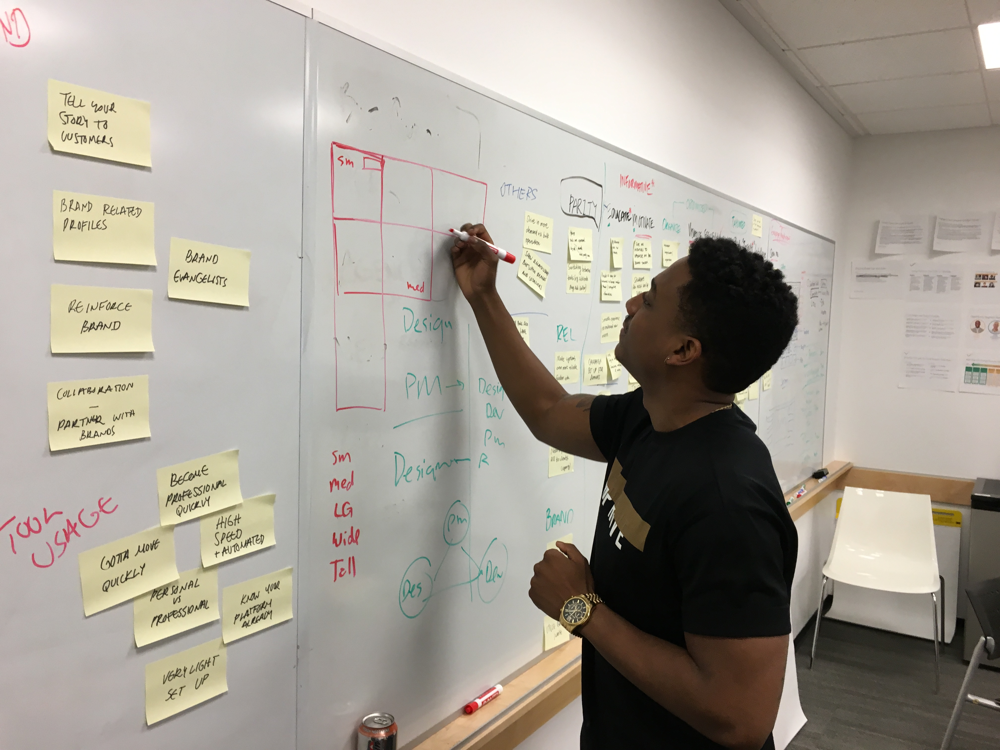
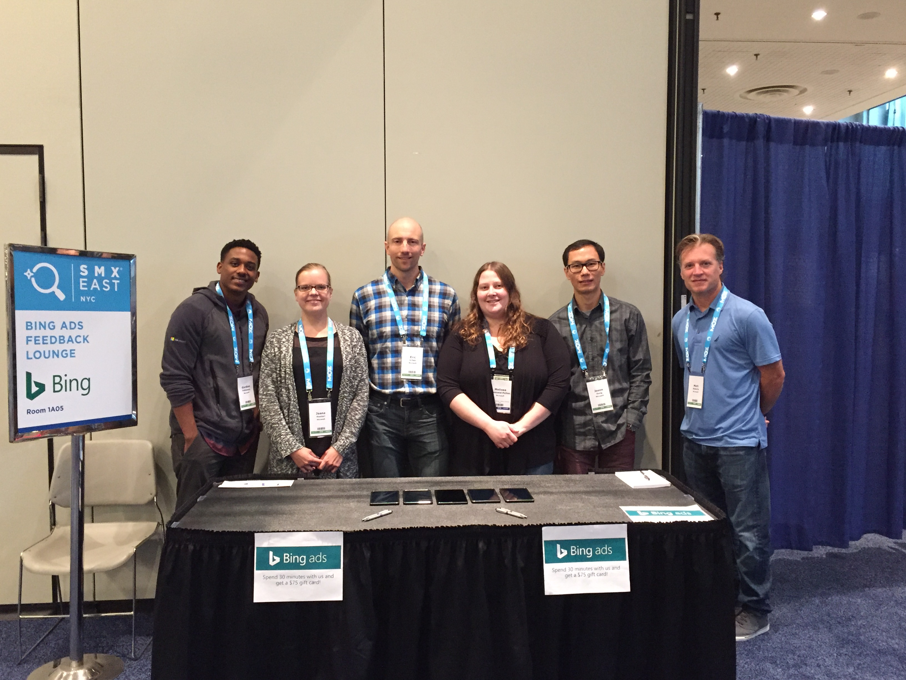
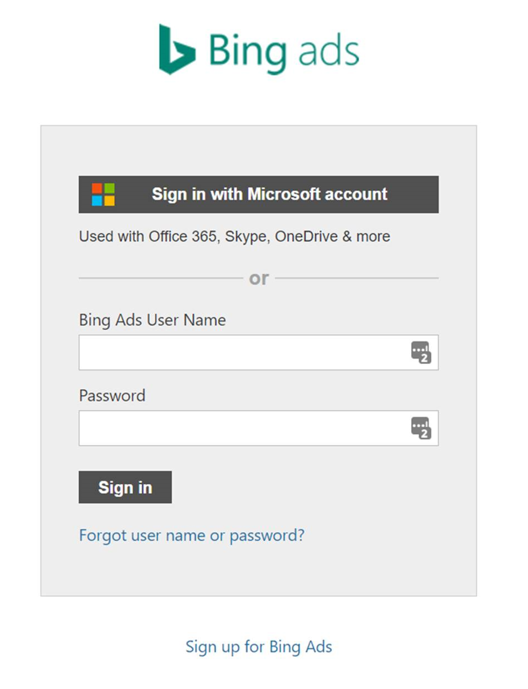
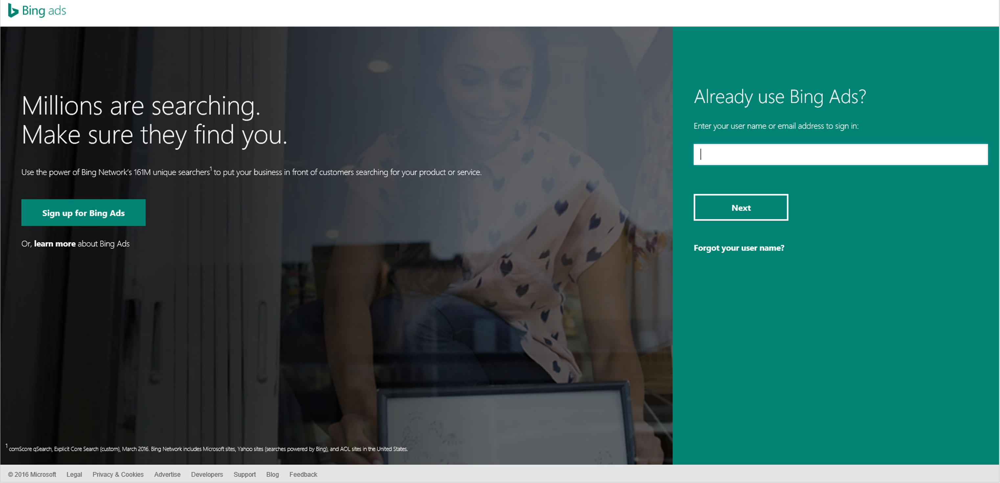
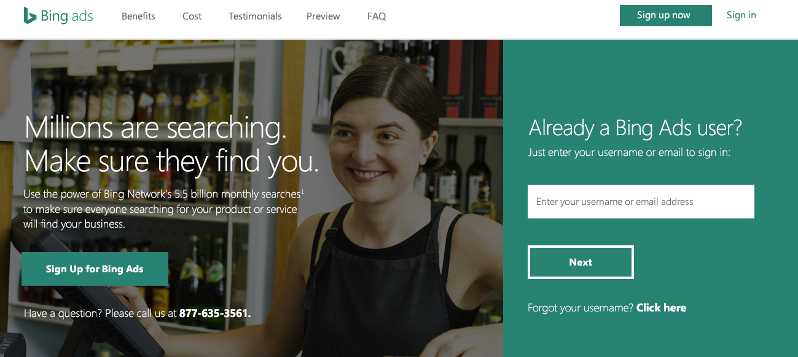
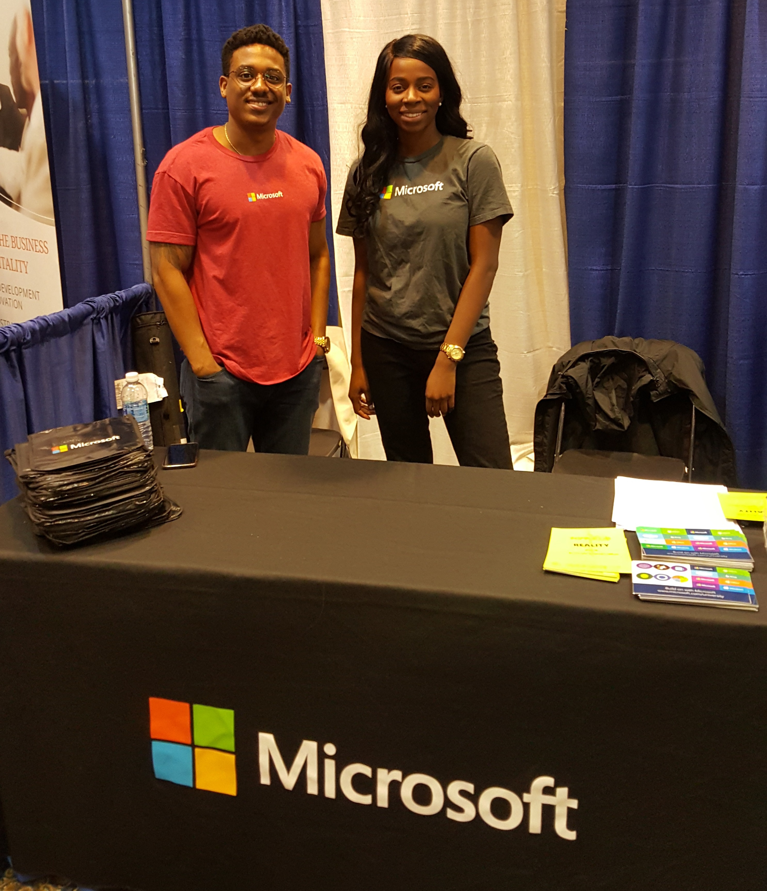

“How might we continue to grow Bing Ads’ search advertising market share while continuing to provide our users with smart, efficient, and fluid experiences within the product?”
Bing Ads
I worked as a UX designer on the Microsoft Advertising (formerly Bing Ads) UX team under the AI & Research organization at Microsoft. My core role was to manage, facilitate, and produce UI for accounts & billing within the product — problems ranging from onboarding to payment methods that usually required rapid prototyping and quick turnaround to ship features that could save advertisers time and money.
Design question
Research
The Bing Ads UX team allowed for flexibility and collaboration, with designers and researchers constantly deep-diving into problems together — including running our own usability studies and speaking directly with users worldwide, so we truly understood their pain points.


One highlight of working in search marketing was attending the SMX East conference each year: our team held a booth at the three-day New York City event and ran usability studies with attendees, each a moderated, roughly 45-minute session incentivized with Bing Ads coupons. Over my time at Microsoft, I worked with researchers to build interactive prototypes for 15+ usability studies, gathering qualitative and quantitative feedback on accounts & billing needs from internal account managers and customers worldwide.
Design implementation
Before

My core role kept me in the sweet spot of design, working with rapid-prototyping tools like Axure Pro and Adobe Creative Suite to build fully functional prototypes for our program managers’ specs and for researchers to validate in usability studies — sitting down with PMs to identify the problem, find where more research was needed, and start building solutions right away.
The sign-in page was one of the more neglected parts of the product since its merge with Yahoo Search and AOL. It was important to tackle this onboarding experience in full, since users relied on it for more than just two text fields — I worked closely with marketing (who owned the content), program managers, researchers, and our China development team to build a new, content-rich sign-in page.
Early concept

After

Results
Over three years at Microsoft I shipped 10+ features to advertisers worldwide, with instrumentation in place to gauge success and failure rates so we could keep iterating. The new sign-in page design showed an increase in sign-ups for Bing Ads and in SEO traffic, and we launched a new performance-based coupon system.

Alongside this core role, I’m passionate about diversity and social justice, which is why I joined the AI & Research Diversity & Inclusion team focused on attracting, retaining, and engaging diverse talent — working to decrease interview, gender, and racial bias, and visiting under-represented universities, including my alma mater Hampton University, to help recruit promising interns and full-time hires.